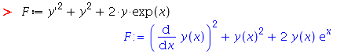
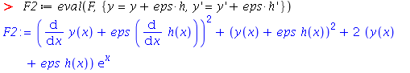
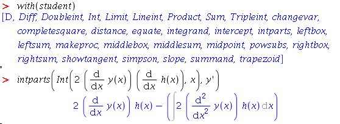
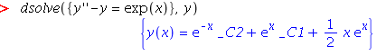
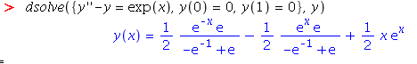
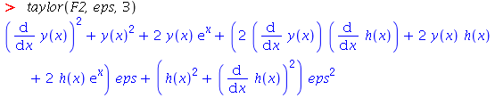

Gâteaux differentials and Euler-Lagrange equations using Maple
 This article describes how to solve simple problems in the calculus of
variations using Maple. Maple actually has a function module for this,
but it's more illustrative -- and perhaps more reliable -- to
perform the algebraic manipulations step-by-step.
In what follows I assume that the reader is basically familiar with the
terminology and notation of calculus of variations. If that isn't the
case, you might prefer to look first at my related article
Calculus of variations: a lunchbreak guide.
I also assume knowledge of calculus (particular integration by
parts) and some familiarity with the computer algebra system
Maple. I've tested the examples with version 16 on Linux, but I have no
reason to think that other versions would behave differently.
This article describes how to solve simple problems in the calculus of
variations using Maple. Maple actually has a function module for this,
but it's more illustrative -- and perhaps more reliable -- to
perform the algebraic manipulations step-by-step.
In what follows I assume that the reader is basically familiar with the
terminology and notation of calculus of variations. If that isn't the
case, you might prefer to look first at my related article
Calculus of variations: a lunchbreak guide.
I also assume knowledge of calculus (particular integration by
parts) and some familiarity with the computer algebra system
Maple. I've tested the examples with version 16 on Linux, but I have no
reason to think that other versions would behave differently.
The problem
In this example problem, we want to find a value of y -- that is, a function y(x) -- which is a stationary path of the functional S[y]: $$ S[y] = \int^1_0 y'^2 + y^2 + 2te^x \, dx $$ The path must pass through the points (0,0) and (1,0); that is, the boundary conditions are y(0)=0 and y(1)=0. I've picked this example because it's relatively straightforward to solve -- with or without Maple -- and produces a compact, comprehensible answer. Many variational problems are not so obliging. In particular, there may be multiple stationary paths; in this example, there is only one. Any stationary path may be a maximum or minimum, but need not necessarily be either -- determining this requires a consideration of second variations, which I will touch on only briefly in this article. The basic procedure will be: 1. Find the Gâteaux differential of the functional;2. determine the Euler-Lagrange equation from the Gâteaux differential;
3. solve the E-L equation to determine the stationary path y;
4. consider second variations to get an idea whether the stationary path is a maximum or minimum, if either.
The Gâteaux differential
If y=y(x) is a stationary path of the functional S[y], and h(x) is any alternative path that satisfies the same boundary conditions, then we write the Gâteaux differential as follows: $$ \Delta S[y,h] = \frac{\partial}{\partial \epsilon} S[y+\epsilon h] \, | _{\epsilon=0} $$ This is the analogue in the calculus of variations of finding a turning point (critical point) of a function -- in that case we consider changes to the value of the function caused by a small change ε in its argument, looking for a place where a small displacement in the argument causes no change in the function's value. At this point, the function must be at a turning point. In the calculus of variations, we're looking for a function, rather than an argument to a function, for which small changes in the function cause no change in the functional. When the functional is of the form $$ S[y] = \int^1_0 F(x,y,y') \, dx $$ then we derive the Gâteaux differential as follows: $$ \Delta S[y,h] = \frac{\partial}{\partial \epsilon} \int^1_0 F(x,y+\epsilon h, y'+\epsilon h') \, dx \, | _{\epsilon=0} $$ Note that we have to consider variation by εh of both y and y'. Provided all the derivaties are well-behaved, we can change the order of integration in this expression, and write it thus: $$ \Delta S[y,h] = \int^1_0 \frac{\partial}{\partial \epsilon} F(x,y+\epsilon h, y'+\epsilon h') \, | _{\epsilon=0} $$ This formulation is much easier to handle, and with luck and a bit or work we should end up with an expression like this: $$ \Delta S[y,h] = \int^1_0 \frac{\partial}{\partial \epsilon} G(x,y,y') h(x) \, | _{\epsilon=0} $$ From here, we can get the Euler-Lagrange equation immediately, as $$ G(x,y,y')=0 $$ For reasons that will be outlined below. However, we've got quite a bit of work to do first. Happily, Maple can handle most of it. Start by defining in Maple the expression which we will differentiate with respect to ε, that is, the integrand of the functional:
(This is a side issue, but remember that Maple does not care to have exponentials entered as ex, even though it displays them that way). Now define a new variable, F2, to hold the value of F when y is displaced by εh :
I'm using the variable eps to represent ε in Maple; the program does support Greek letters, but I find English easier to type. Now differentiate F2 with respect to ε, and set ε to zero:

Deriving the E-L equation
Annoyingly, we're not quite ready to get the E-L equation from this expression for the Gâteaux differential, because the integrand has terms in both h and h', so we can't just factor h out of each term. To convert the h' term into an h term, we need to split the integral up into a sum of integrals, and apply integration by parts to the integral that contains h'.So, to begin: $$ \Delta S[y,h] = \int^1_0 2y'h' \, dx + \int^1_0 2(y + e^x) h \, dx $$
Performing the integration by parts of the first integral is trivial in
this case, but the Maple intparts function might be helpful
in less straightforward cases; this function is in the 'student' package.

In the screenshot above, I've cut-and-pasted the relevant term from the output of the differentiation expression, to avoid typing errors (which is why it appears to be formatted already). With this result, we can rewrite the Gâteaux differential: $$ \Delta S[y,h] = [2y' h]^1_0 - \int^1_0 2y''h dx + \int^1_0 2(y + e^x) h dx $$ In this example, I'm assuming that the alternative path h must meet the stationary path y at the boundaries. That is, h(a)=h(b)=0. In this case, the boundary term of the above equation vanishes, and we can recombine the two integrals, both of which now have integrands that are multiples of h. $$ \Delta S[y,h] = 2 \int^1_0 (y + e^x -y'') h \, dx $$ The Euler-Lagrange equation is obtained simply by equating the term multiplied by h to zero, as we require the value of y that will make the Gâteaux differential zero for any alternative path h. This gives us: $$ y + e^x - y'' = 0 $$ Or, more conventionally: $$ y'' - y = e^x $$Solving the E-L equation
In this example, we've ended up with a fairly benign differential equation, which is rather unusual for a practical variational problem. This DE is a second-order, linear one with constant coefficients -- just the kind of thing covered in undergraduate DE courses, and for which a well-defined solution exists. The DE is non-homogenous, which means that the general solution will be comprised of a homogeneous solution and some particular solution. The homoegeneous solution to this kind of DE is nearly always of the form: $$ y_h = Ae^ax + Be^bx $$ and the particular solution can be guessed from the right-hand side of the equation to be something like $$ y_p = Cxe^x $$ Actually, our first guess might be $$ y_p = Ce^x $$ This is, indeed, a solution to the DE, but that doesn't help us, since this solution is already part of yh. Multiplying the solution by x is a pretty common strategy such cases. Anyway, we can solve this E-L equation by a simple application of Maple'sdsolve function, as follows:

The constants _C1 and _C2 fall to be determined from the boundary conditions, which we are told are y(0)=0 and y(1)=0. Rather than solving for them explicitly, we can just list the boundary conditions in the set of equations to be solved bydsolve, and that gives the final answer:

The form of y will be shaped to some extent by the values of the boundary conditions, but this class of differential equation only has one non-trivial solution (and this one doesn't even have the trivial solution y=0). So we can be reasonably sure that, whether the y we have found is a maximum or a minumum or neither, there isn't a 'better' solution that we haven't spotted. This might not be the case in more complex problems.Second variations
The functional $$ S[y+\epsilon h] $$ is, for any particular choice of y and h, a function of ε. We have already considered how to find a stationary value of y by finding the first derivative of the functional with respect to ε and setting ε to zero. However, to determine the nature of the stationary path requires consideration of higher-order derivatives. There is a clear analogy here with finding turning points of functions; the first derivative of the function will tell us the turning points, but we need the second (or possibly higher) derivative to determine whether the turning point is a maximum or minimum, if either. The analog of the second derivative in the calculus of variations is termed the second variation, and is typically derived using the following procedure. We have already seen that we can change the order of integration of the function -- putting the derivative with respect to ε inside, rather than outside, the integration with respect to x. Where it is possible to do that, we can express the integrand as a Taylor expansion in ε. Where the functional is of this form: $$ S[y] = \int^1_0 F(x,y,y') \, dx $$ the function obtained by displacing y by εh is: $$ S[y + \epsilon h] = \int^1_0 F(x,y+\epsilon h, y'+\epsilon h') \, dx $$ and the Taylor expansion is: $$ S[y + \epsilon h] = \int^1_0 F|_{\epsilon=0} + \epsilon{\frac{\partial F}{\partial \epsilon}|_{\epsilon=0}} + \frac{\epsilon^2}{2!}{\frac{\partial^2 F}{\partial \epsilon^2}|_{\epsilon=0}} + ...\, dx $$ Because we can change the order of integration, this expression can also be written: $$ S[y + \epsilon h] = \int^1_0 F|_{\epsilon=0} \, dx + \int^1_0 \epsilon{\frac{\partial F}{\partial \epsilon}|_{\epsilon=0}} \, dx + \int^1_0 \frac{\epsilon^2}{2!}{\frac{\partial^2 F}{\partial \epsilon^2}|_{\epsilon=0}} \, dx + ... $$ The first term in the expression is just S[y]. The second term, usually called the first variation, must be zero for there to be a stationary path -- because it is based on the first derivative of F with respect to ε, it is zero for the same values of h and ε that make the Gâteaux differential zero. It is the third term -- the second derivative -- we need to consider. In Maple we can use thetaylor function to get an Taylor
expansion of F. As before, we define F2 based on the
supplied functional:
Then we take a Taylor expansion to second order (the argument '3' includes the zeroth-order term):

The first four terms in this series are just the zeroth-order term of the expansion, corresponding to S[y]. The next term, (...) eps, is the first-order term, and we can see it is just Gâteaux differential derived earlier, multiplied by ε It is the next term, (...) eps^2, that is relevant here - this is the second-order term in the Taylor expansion. With a value of y that makes the variation stationary, the nature of the stationary path is categorized by the behaviour of this term with respect to ε and h. As luck (and a bit of careful problem selection) would have it, it's easy to analyse this second variation. Because the values of h, h' and eps are all squared, the second variation will be positive, whatever these values. Therefore, any displacement from the stationary path can only increase the value of the functional. Consequently, this is a minimum. Moreover, because we know that the differential equation has only one solution, it is a global minimum.Summary
This article has explained in outline a method for solving simple variational problems using Maple and in a way that I hope is reasonably illustrative. One of the problems with working with calculus of variations in Maple is that the techniques we use involve treating a the derivatives of the arguments to a function as if they were separate independent variables; this isn't a thing that Maple is particularly happy with, and so care has to be taken. In his book Physics with Maple, Frank Wang suggests a completely different approach than the one I have used in this article. His method is to use Maple'ssubst function to temporarily turn Maple
functions of the form diff(y,x) into ordinary variables which can
then be used as the independent variables in other differentiations.
With this
approach, he substitutes the integrand of a functional into the generic
Euler-Lagrange equation, and solves it. This is almost a one-step process,
but it has (in my view) the disadvantage that mistakes are less
easily spotted in the intermediate results.